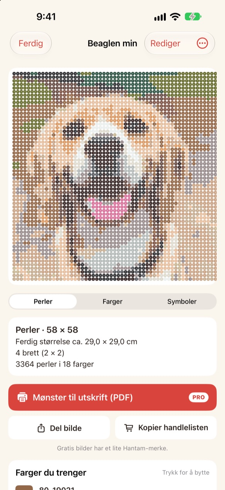
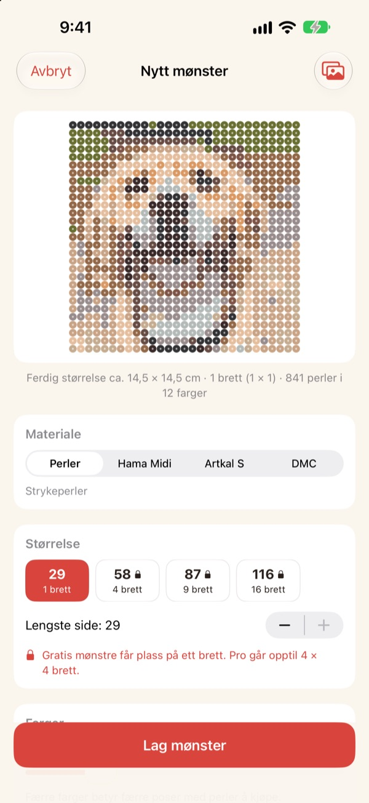
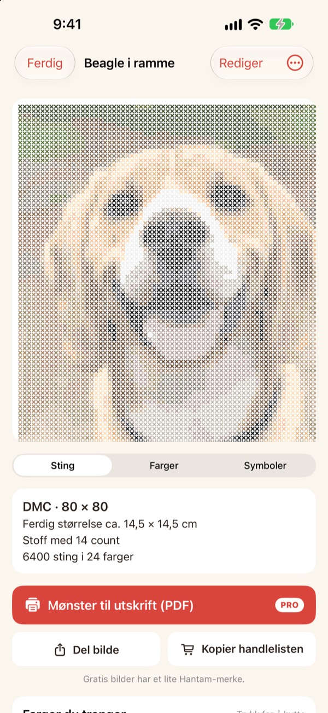
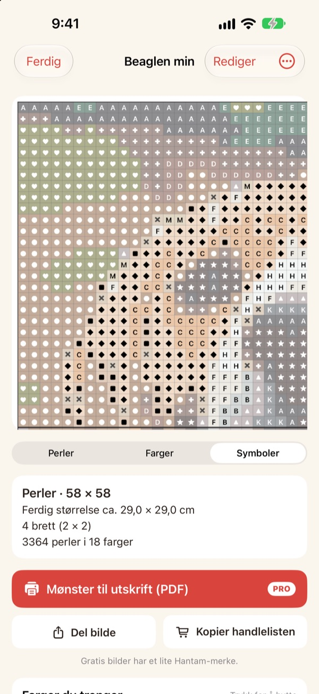
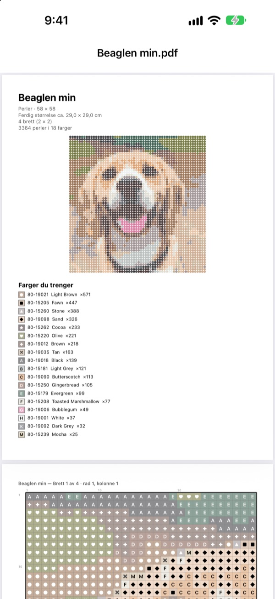

Et bilde
blir et mønster
Velg et bilde av kjæledyret ditt, deg selv eller yndlingsfiguren din. Hantam gjør det om til et mønster for strykeperler eller korssting, i farger du kan kjøpe.
Gratis for mønstre på ett perlebrett. Bildene forlater aldri iPhonen din.

Prøv på et bilde
Samme fargematching som i appen, med Perlers ekte fargekart. Endre størrelse og antall farger, eller prøv med ditt eget bilde.
Et mønster er lett. Å treffe ekte perlefarger er vanskelig
Pikselerer du et bilde i et vanlig redigeringsprogram, får du farger som ingen perle eller garn finnes i. Så må du gjette hvilken boks hver rute hører til, og telle hvor mange av hver du må kjøpe. Hantam velger bare blant farger som faktisk selges, og sier nøyaktig hvor mange du trenger.
Ekte farger, ekte numre
Velg perler fra Perler, Hama Midi eller Artkal S, eller DMC-garn. Hver rute får en farge merket faktisk selger, med fargenummer.
Du bestemmer størrelse og antall farger. Store mønstre deles opp i perlebrett på 29 × 29.

Korssting også
Velg DMC-garn, så blir det samme bildet et korsstingsmønster. Velg Aida-stoff med 11, 14, 16 eller 18 ruter per tomme, og Hantam viser ferdig størrelse og antall sting for hver farge.

Du vet nøyaktig hva du skal kjøpe
Bytt til symbolmønsteret og følg det rute for rute, med tykke streker ved hver brettkant eller for hvert 10. sting. Se hvor mange perler hver farge trenger, og bruk Kopier handlelisten med ett trykk.
Trykk på en rute for å endre den, eller bytt én farge med en annen overalt.

Skriv ut og sett i gang
Med Pro eksporterer du et Mønster til utskrift (PDF): først fargelisten, så symbolmønstre side for side, ett perlebrett om gangen.

Tre steg til mønsteret
- 1
Velg et bilde
Kjæledyr, ansikter, logoer og figurer fungerer. Bilder med et tydelig motiv blir best.
- 2
Velg perler eller garn
Velg merke, størrelse og antall farger.
- 3
Sett i gang
Følg mønsteret på skjermen, eller skriv det ut med Pro.
Materialer og størrelser
- Perler · Hama Midi · Artkal S
- Strykeperler, perlebrett på 29 × 29, hver perle ca. 5 mm
- DMC
- Korsstingsgarn på Aida med 11, 14, 16 eller 18 ruter per tomme
- Gratis
- Perler opptil 1 brett (29 ruter), garn opptil 40 sting på den lengste siden
- Pro
- Perler opptil 4 × 4 brett (116 ruter), garn opptil 200 sting
- Farger
- Fra 2 til 50 per mønster
Perler, Hama, Artkal og DMC er varemerker for sine respektive eiere. Hantam har ingen tilknytning til dem. Farger på skjermen kan se litt annerledes ut enn i virkeligheten.
Start gratis. Pro for store mønstre og utskrift.
Gratis
- Mønstre opptil ett perlebrett eller 40 sting
- Alle merker: Perler, Hama, Artkal og DMC
- Antall per farge, handleliste og fargebytte
- Opptil 3 lagrede mønstre
- Del bilder med et lite Hantam-merke
Hantam Pro
- PDF-mønstre til utskrift
- Opptil 4 × 4 perlebrett eller 200 sting
- Ubegrenset antall lagrede mønstre
- Bilder uten merke
- Alle pikselkunstverktøy
Måneds- eller årsabonnement, eller ett kjøp for alltid
Du kan også gi Pro i gave til en venn rett fra appen.
Spørsmål og svar
Blir bildene mine lastet opp?
Nei. Bilder og mønstre behandles og lagres bare på iPhonen din.
Fargene ser litt annerledes ut enn perlene mine.
Skjermer viser farger annerledes enn plast og garn. Trykk på en farge i listen for å bytte den med en nærmere farge fra samme merke.
Hvor stort kan et mønster bli?
Gratis passer det på ett perlebrett på 29 × 29 eller 40 sting på den lengste siden. Med Pro opptil 4 × 4 brett (116 perler) eller 200 sting.
Hvilke bilder blir best?
Bilder med ett motiv og en enkel bakgrunn. Jo færre farger, jo renere mønster, så senk antall farger hvis resultatet ser urolig ut.
Kan jeg fortsatt lage pikselkunst?
Ja. Pikselering av bilder, tegning etter 110 forbilder og bilde-for-bilde-animasjon finnes fortsatt. Alle pikselkunstverktøyene er med i Pro.
Hvordan gjenoppretter jeg kjøpet?
Åpne innstillingene i appen og trykk på Gjenopprett kjøp. Bruk den samme Apple-kontoen som du kjøpte Pro med.
Hvordan sier jeg opp abonnementet?
Gå til Innstillinger på iPhone › navnet ditt › Abonnementer og velg Hantam. Livstidstilgang er en engangsbetaling og fornyes aldri.
Hvordan melder jeg fra om feil eller foreslår en idé?
Raskest er å sende tilbakemelding fra innstillingene i appen. Du kan også skrive til adressen nedenfor eller sende en DM på Instagram (@lee25_ios).
Spørsmål, feil og idéer tas imot på leeo@kakao.com.